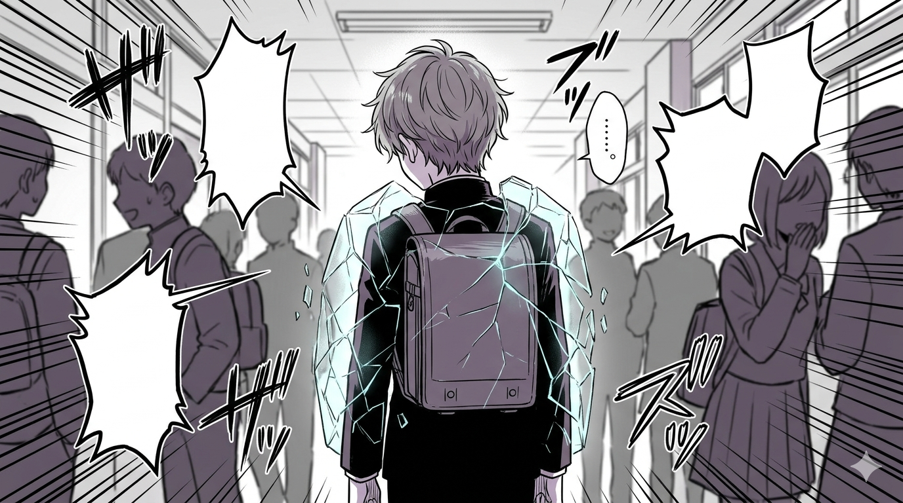
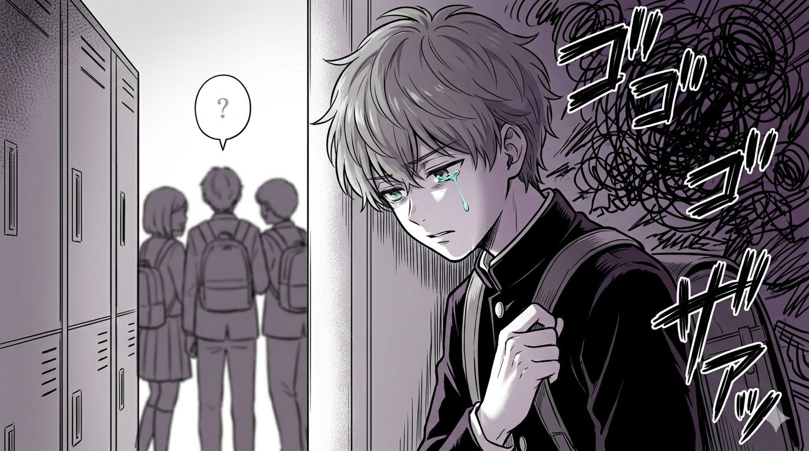

O que acontece quando o silêncio é a única resposta?
Você já ouviu alguém dizer "eu nem ligo para o que eles falam"? Muitas vezes, essa frase não é sinal de força, mas um escudo. No estilo dos melhores mangás de drama, o herói esconde suas cicatrizes sob um sorriso ou uma expressão de indiferença.

Espaço reservado para: img1.png (Cena do aluno com a máscara de indiferença)'">Fingir que não se importa é uma forma de tentar tirar o "poder" do agressor. Mas, por dentro, o acúmulo dessas palavras cria um peso difícil de carregar sozinho.
Se alguém sai machucado, a diversão acabou. O bullying se alimenta do silêncio de quem observa e da dor de quem sofre.

Espaço reservado para: img2.png (Situação de bullying no corredor da escola)'">